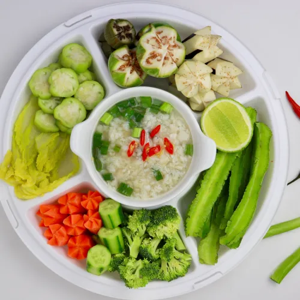
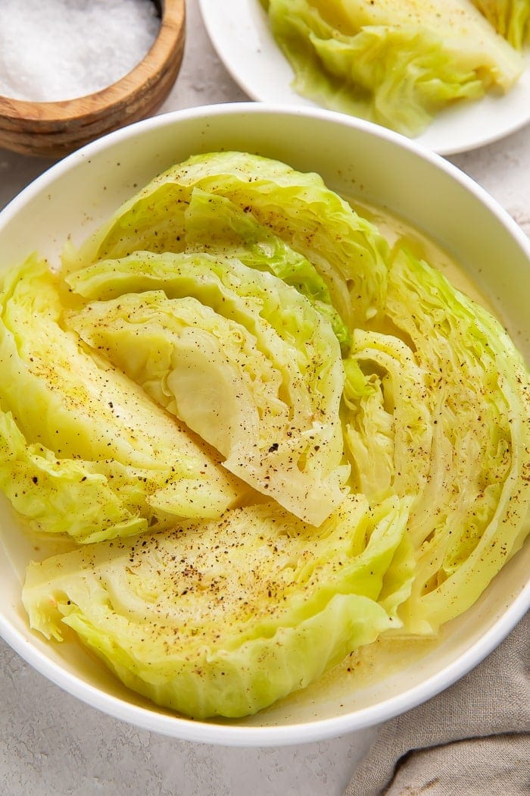
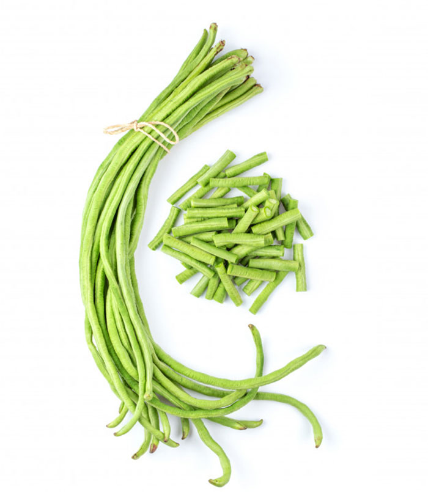

Terk Kroeung
ទឹកគ្រឿង
Terk Kroeung is a traditional Khmer fish dip made with finely ground herbs, kroeung spices, and grilled or steamed fish, served with fresh vegetables.

Ingredients
Snake Head Fish

1 fish
Buy NowGarlic

2 cloves
Buy NowLemongrass

2 stalks
Buy NowGalangal

1 inch piece
Buy NowKaffir lime leaves

4 leaves
Buy NowCucumber

1 medium
Buy NowCabbage (Boiled)

1
Buy NowLong Beans

100g
Buy Now-
Step 1: Prepare the fish
- Clean and fillet the fish
- Cut into small pieces
- Set aside
-
Step 2: Make the herb paste
- Pound or blend garlic, lemongrass, and kaffir lime leaves
- Process until smooth
-
Step 3: Cook the fish
- Lightly steam or cook the fish pieces until fully done
-
Step 4: Combine fish with herbs to make dip
- Mix the cooked fish with the herb paste
- Mash or stir until it becomes a smooth dip
-
Step 5: Serve with vegetables
- Slice cucumber, cabbage, and long beans
- Serve the fish-herb dip alongside the vegetables
- Eat by dipping vegetables into the dip